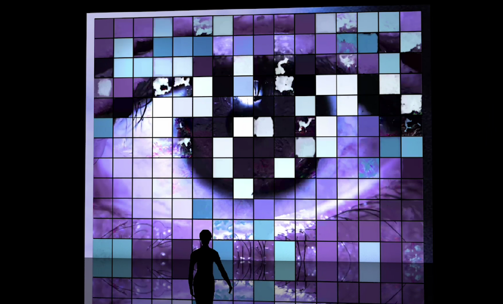
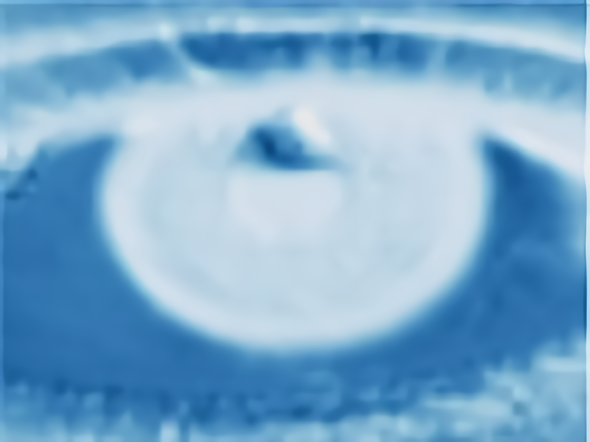
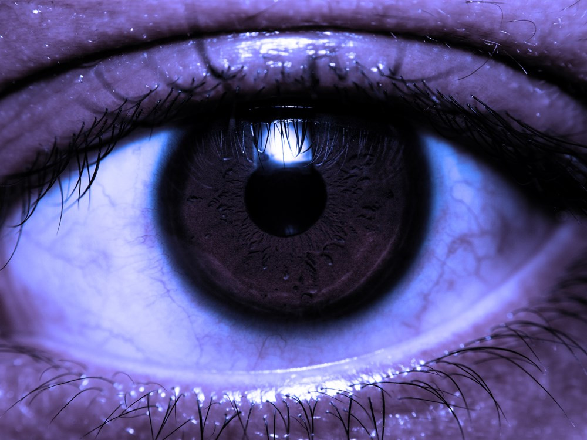
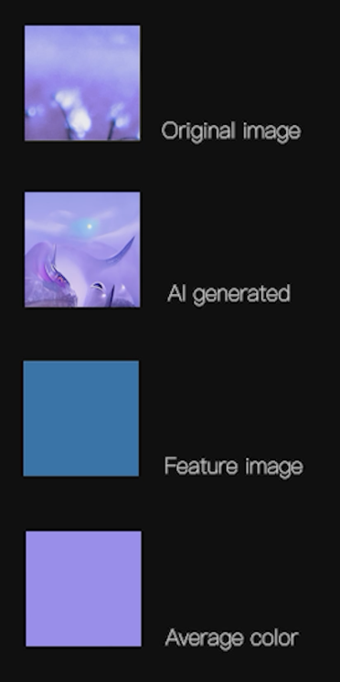
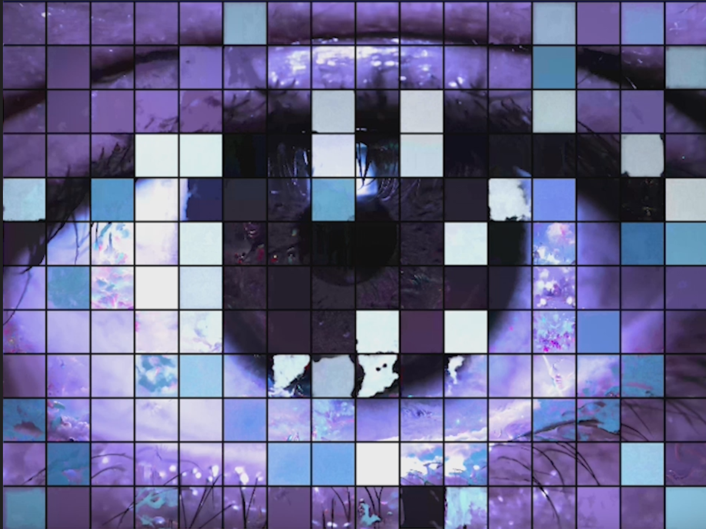

2022 / Digital art
[Digital Art] EYE · AI -A Public Art Installation Presenting the Visual Interpretation through the Len of AI

This is a public art installation for the Lumen Prize Moving Image section conceived and created by an interdisciplinary team. I took the lead in the creation of the whole work, and realized the process of generating visual changes, capturing feature maps from the Convolutional Neuarl Network, and interpolation fusion of image materials through AI algorithms.
(Check out the video from: https://16096389d.wixsite.com/website/videos )
EYE · AI is a digital visual installation consisting of 192(16*12) units that interprets what is seen from the perspective of algorithms, presenting the interwoven of macro and micro with the visually intense and changing "grid world." Based on tribute and reflection on traditional mosaic art, the team aims to bring critical thoughts to audiences with the infusion of AI. Through the symbolic "eye" and 192 pieces of "worlds seen by AI," audiences are indulged in curiosity and reflection during the "eye-to-eye" moment.
The team modified the content based on the original image of each grid, introducing three other different art forms collaborated with AI:
AI-generated image generated by GAN+Clip. The team chose topics such as the universe and space to guide AI to create decent content.
The average color. Characteristic color visualized by the Convolutional Neural Network. Including the original content, every grid has four-channel visual elements, circulating continuously in a preset order. Audiences can virtually wander the globe from the AI's "vision," presenting fantastic and thought-provoking stories from the human world through each square. Whenever tourists find new insight about what AI is telling, the patterns are instantly broken by objective algorithm-infused images, as if all of them are just a "visual semiotics joke" left by the algorithm to human beings. Audiences could revisit the concepts frequently discussed today under the prompts of AI in this AI era. From DNA to celestial bodies, from love and peace to poverty and famine...


About Tech……
EYE · AI conceptually focuses on the on-cite presentation and interpretation of various visual information in computer vision distinguishing other AI generative artwork. It focuses on presenting our concept through reconstructing representative images that appear in different AI computational algorithms: Novel AI synthetic tools, convolutional neural networks, and deep interpolation algorithms are adopted to achieve dynamic image generation and fusion.
We regard AI as a "controllable collaborator" in the creation. Thus precise guidance is given to the algorithm through "prompts" to complete a "human world as seen by AI," based on the "GAN+Clip" algorithm, which is a novel neural network architecture. It allows creators to generate associated images with GAN by inputting texts or enhancing existing images. One of the advantages is to collect images related to the input text in a huge image dataset with the help of Clip and then use GAN to create stunning generative art based on these data. The team worked hard on sorting out the topics to be presented in "the world is seen by AI." Topics consist of three categories: First, issues that are expected to be understood by humans exclusively by stereotypes ( e.g., "universe," "DNA," "friendship," etc.) Second, some abstract but also high hopes for AI solutions, such as "humanism," "love," "sin," etc. Last, hotly discussed social issues have also been added, such as "war," "LGBT," "disaster," etc. By entering text as prompts, the AI builds its creation on each eye fragment, injecting unique and intriguing understandings into the pictures, reflecting all aspects of the human world with a massive and stunning eye.
To represent a conflict of perception, we contrast the AI-synthesized image from the previous channel with the abstract perception of the picture by the CNN algorithm - the visualization of the feature data collected by each layer of the neural network. Like the "eigenfaces" that appear in some deep learning face recognition projects, the feature data represent the process of AI understanding image information. The team built a CNN network, input the entire original eye image into it, obtained the weight data from the intermediate layer, visualized it as a cyan eye image, and then divided the image with the grid and assigned it to the corresponding position. These cyan-blue patches serve as pure data in stark contrast to the vivid pictures previously generated by AI.

Finally, to connect these static fragments and give new meaning to work with the dynamics, we used a deep learning-based interpolation algorithm, which supplements the frames by calculating the visual correlation between two images to merge into a changing picture. The interpolation algorithm is as natural as the water flow between similar photos. Still, it shows a conflicting beauty, like piercing a piece of paper between shots with a significant difference. The team constructed the contents of each small square in the order of original image, AI synthetic image, feature image, and monochrome color patch.
